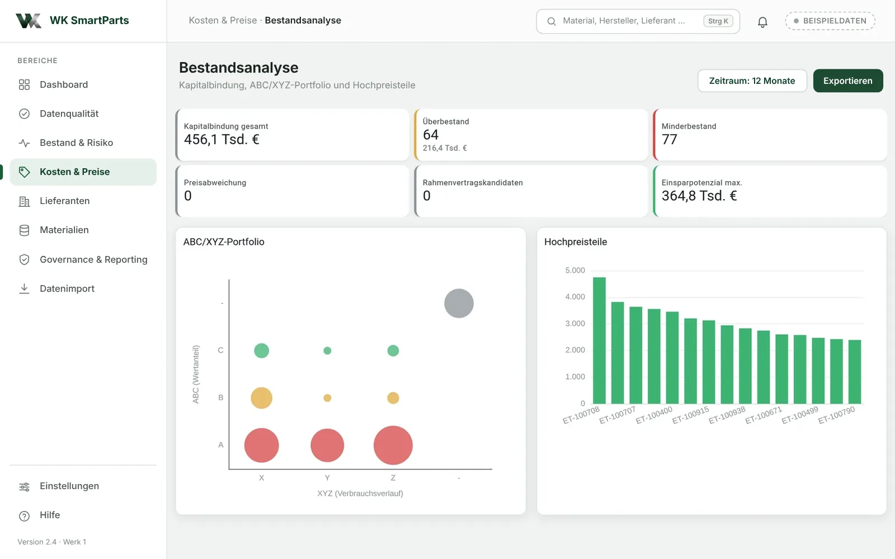
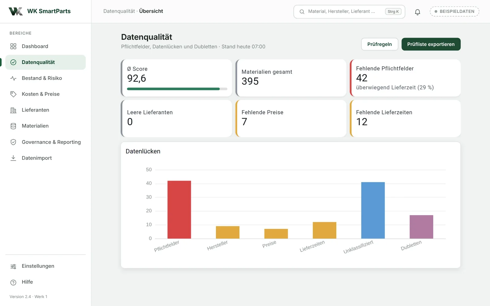

Weniger Kapitalbindung. Mehr Versorgungssicherheit.
Zu viel Material bindet Geld, zu wenig gefährdet den Betrieb. Wir bewerten Bestände, Daten und Beschaffung gemeinsam.
Zwei Risiken. Ein Ziel.
Überbestand und Fehlbestand entstehen oft im selben Lager – beide kosten Geld.
Überbestand
Kapital gebunden.
- Kapitalbindung
- Lagerkosten & Platz
- Alterung
Fehlbestand
Stillstandsrisiko.
- Anlagenstillstand
- Eilbeschaffung
- Lieferzeit ohne Alternative
Balken zeigen qualitativ die Wirkung, keine Messwerte.
Bestände bewerten statt nur zählen.
Mit WK SmartParts wird sichtbar, wo Risiken liegen und Kapital frei werden kann.

Bestandsrisiko
Ampel: sicher versorgt, Risiko, Stillstand möglich – darunter der Handlungsbedarf als Liste.

ABC/XYZ
Wertanteil und Verbrauchsverlauf: Welche Teile eng steuern, wo genügt einfache Disposition?

Datenqualität
Fehlende Pflichtfelder, Hersteller, Preise, Lieferzeiten und Dubletten auf einen Blick.

Bestellvorschläge
Unterbestände nach Lieferant gebündelt – nachvollziehbar statt aus dem Bauchgefühl.
Nicht jedes Teil ist gleich wichtig.
Entscheidend ist, was ein fehlendes Teil im Betrieb auslöst.
Kritikalität
Bewertet nach Auswirkung im Betrieb, nicht nach Preis.
Lieferzeiten
Lange Wiederbeschaffung und Single Source erkennen, bevor sie zum Engpass werden.
Alternativen
Alternativteile und zusätzliche Lieferanten, wo das Original knapp ist.
Alternativteile & LieferantenLeistungen in diesem Bereich
- Datenbereinigung
- Bestandsoptimierung
- Alternativteilfindung
- Lieferantenfindung
- Obsoleszenzmanagement
Wie viel Kapital könnte in Ihrem Lager frei werden?
Lagerwert einstellen, Ergebnis ablesen. Ein grobes Rechenbeispiel auf Basis vorsichtiger Annahmen – kein Angebot, keine Zusage. Belastbare Zahlen liefert erst die Analyse Ihrer Daten.
- Kapital, das frei werden könnte
- 63.000 €
- Lagerkosten, die jährlich entfallen könnten
- 9.450 €
Klarheit über Ihr Lager.
Der Quick-Check mit Schwerpunkt Material & Ersatzteile zeigt, wo Bestände zu hoch sind und Versorgungslücken drohen.